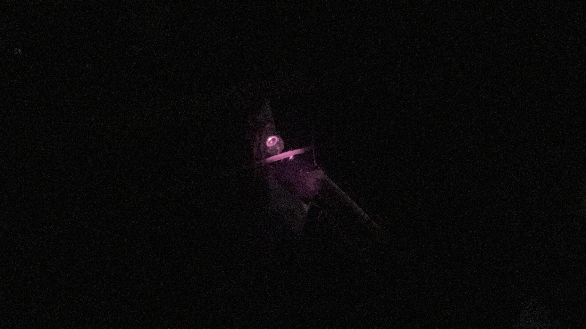
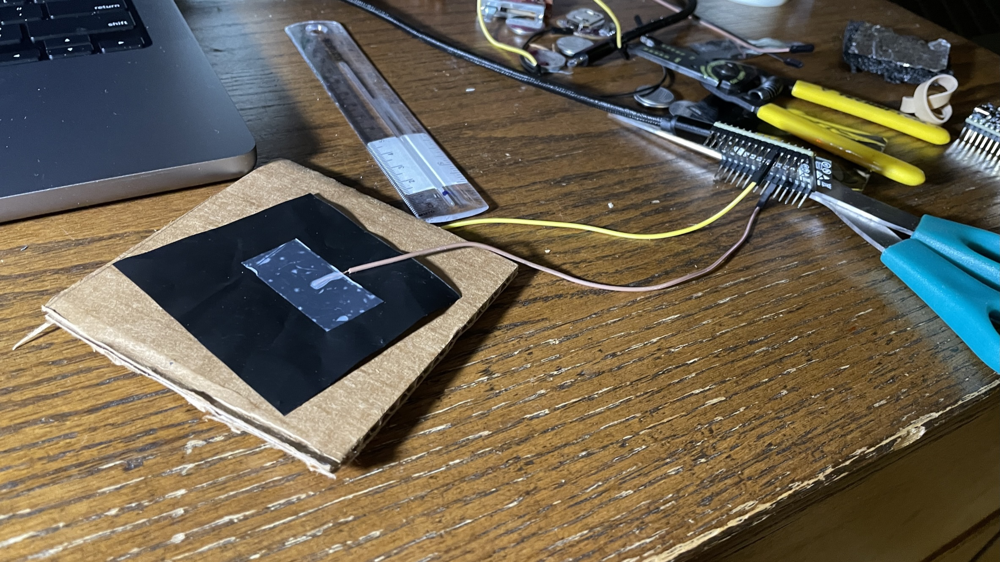
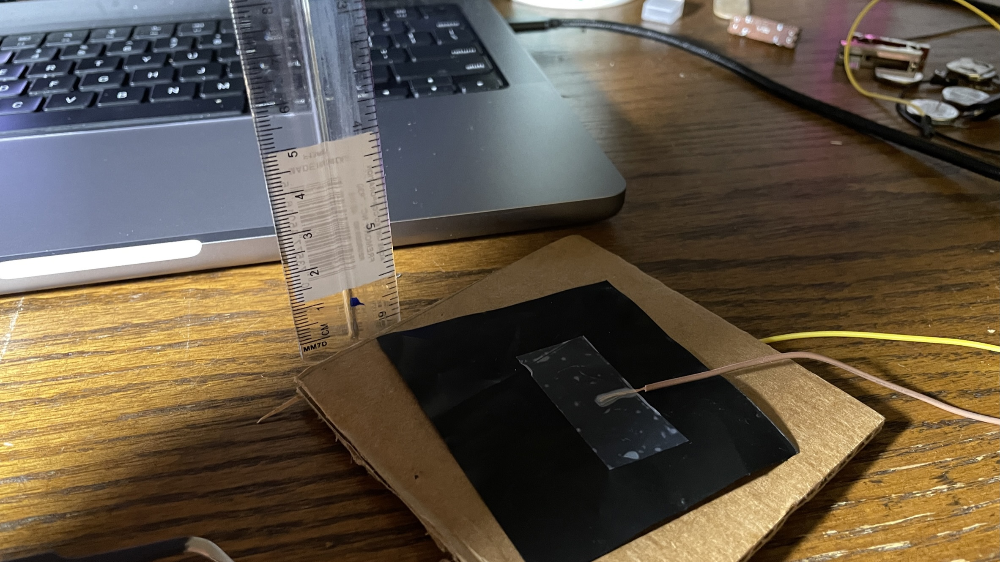
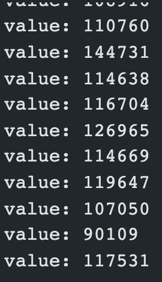

Electronic Input
This week I built 2 sensors to take real world things and turn them into digital data.
Vibration Sensor
I had this idea because sometimes I will pluck something like a rubber band and I wonder what frequency it is vibrating at. This sensor aims to read that and is a good prototype for future vibration sensors.
The Idea
To build this vibration sensor I wanted to use infrared light sensing. IR sensing involves sending out infrared light from a LED and receiving an amount of infrared light using a phototransistor.

LED left, phototransistor right
To sense vibration I would look for dips in the values where there was less IR light received by the IR sensor. This works because the string should interrupt the path of the IR light as it vibrates up and down
Build Process
For this sensor I knew that I would need a jig of some sort to hold the sensors and the string in place so it could "see" the string moving.

The string is held up by 2 wooden sticks attached to a popsicle stick. The string also runs through a hole in a cardboard piece. The cardboard piece also is the mount for the LED and sensor. This makes it easy to test the string and pluck it to make it vibrate.
One interesting thing that I noticed was that on my phone camera you can see some light coming off of the IR LED.
With my own eye it was just pitch black but my phone picked up something.
Code
The code is what makes this whole project work. The code is the thing that will interpret the output of the IR sensor and give me useful information. I want my code to be able to give me the HZ or frequency of the string at the current moment. To do this I first needed to figure out a way to reduce the noise of the IR sensor. The IR sensor naturally outputs some spikes/noise which would be detrimental to the frequency reading. To get rid of this I decided to take the average value over a second and then output the number of times that the string blocked IR light and output that as the frequency. You can look more into the code below.
#define pR 4
int values [1000];
long currentT;
int lastValue;
long lastRedo;
long lastT;
int currentAvg;
void setup() {
// put your setup code here, to run once:
Serial.begin(115200);
for(int i = 0; i < 1000; ++i) {
values[i] = 0;
}
}
void loop() {
// put your main code here, to run repeatedly:
currentT = millis();
bool vibrating = false;
int currentValue = analogRead(pR);
//Serial.println("Min:0,Max:1023");
//Serial.println(analogRead(pR));
if(-lastRedo+currentT > 10000) {
currentAvg = 0;
lastRedo = currentT;
}
if(abs(currentValue - lastValue) > 75) {
vibrating = true;
}
if(vibrating) {
currentAvg+=1;
}
Serial.println(currentAvg/((currentT-lastRedo)/1000));
lastValue = currentValue;
}
Results

This says that the string was vibrating at 15hz or times/second
This solution allowed me to get rudimentary readings of frequency. There is definitely room for improvement but I am pretty happy with how this first prototype came out.
Proximity Sensor
The Idea
The second thing I built this week was a capacitive proximity sensor. Capacitive sensors are essentially sensors where you read how many charged electrons are stored in a piece of metal. You can reduce this charge by doing certain things like bringing another oppositely charged piece of metal close to the original metal, placing your finger on the piece of metal, or in this case just bringing your finger close to the metal.
I was inspired to create this because of the covid-19 pandemic. Well kinda. In my school's cafeteria there are juice dispensers that are touch free. If you bring your finger close enough to a sensor it will start dispensing juice. I think that these were installed because of the pandemic but thats besides the point. I've always wondered what type of sensor these could be, and when experimenting with a capacitive pressure sensor in class I came across a interesting property of capacitive sensors. Just bringing your hand close to one of the sides reduced the output value substantially. This peaked my interest and I decided that I wanted to dive deeper into it.
The design
To build the capacitive sensor I used 2 equally sized pieces of velostrat placed on a square of cardboard. I then connected these pieces with wire to an ESP32.
This design was good enough for a first prototype to get to know how the proximity would work.
Testing
To test this sensor I used a ruler and held my hand at different heights.
However whenever I held my hand near it I would get a pretty wide range of values and there was a lot of noise in my readings.
To solve this issue I wrote some code to get the average value over 10 seconds. This would ensure that the value was reliable and would also counter any slight movement of my hand.
long result; //variable for the result of the tx_rx measurement.
int analog_pin = 4;
int tx_pin = 3;
long lastT;
long currentT;
int numVal;
int totVal;
void setup() {
pinMode(tx_pin, OUTPUT); //Pin 4 provides the voltage step
Serial.begin(9600);
}
void loop() {
currentT=millis();
result = tx_rx();
if(currentT-lastT > 10000) {
totVal = 0;
numVal = 0;
lastT = currentT;
}
totVal += result;
numVal += 1;
Serial.println(result);
}
long tx_rx(){
int read_high;
int read_low;
int diff;
long int sum;
int N_samples = 100;
sum = 0;
for (int i = 0; i < N_samples; i++){
digitalWrite(tx_pin,HIGH); // Step the voltage high on conductor 1.
read_high = analogRead(analog_pin); // Measure response of conductor 2.
delayMicroseconds(100); // Delay to reach steady state.
digitalWrite(tx_pin,LOW); // Step the voltage to zero on conductor 1.
read_low = analogRead(analog_pin); // Measure response of conductor 2.
diff = read_high - read_low; // desired answer is the difference.
sum += diff; // Sums up N_samples of these measurements.
}
return sum;
} // End of tx_rx function.
This made the values much more reasonable and easier to work with. I then went through the process of holding my hand at different heights and recording the printed value. I ended up with this graph.
Results
.png)
The results follow a roughly logarithmic curve with an r2ed value of 0.972. This is pretty good for my data and will make future editions of a sensor like this much easier to make and might even allow for distance output.